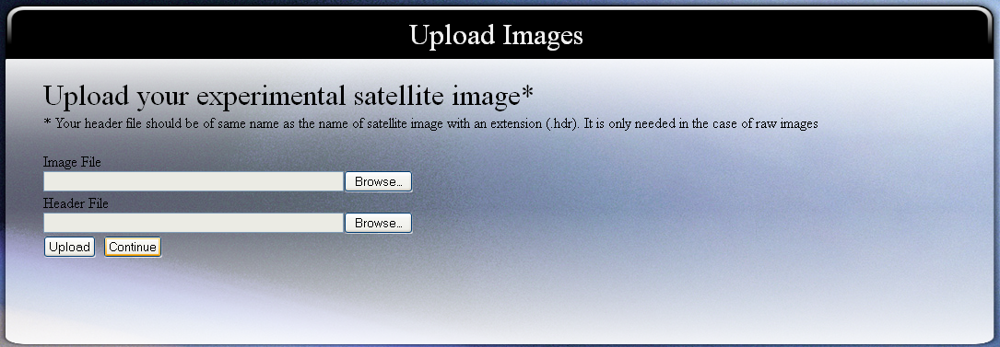

To view single band or color composite, subset image and its pixel data of raw satellite image or general image formats with image histograms.

Many of the satellite images we see have very different colors than the ones we are used to seeing with our own eyes.
Why do satellite images look so different?
Below are two pictures (figure 1) of the exact same location. The picture on the left is a "true color" image, this means that the picture shows objects in the same colors that your eyes would normally see. The picture on the right is a "false color" image, this means that the colors have been assigned to three different wavelengths that your eyes might not normally see.
Humans cannot see light past the visible spectrum, but satellites are able to detect wavelengths into the ultraviolet and infrared. Satellites fly high above the earth, using instruments to collect data at specific wavelengths. These data can then be used to build an image. Satellite instruments are able to obtain many images of the same location, at the same time. Each image highlights a different part of the electromagnetic spectrum. As the data in some bands are not in visible spectrum we need to assign visible colors to perceive it from our eyes.
In order to generate a color display of a satellite image on the monitor, we need to choose
Such a display is known as a color composite.
A False Color Composite (FCC) is formed when the data assigned to red / green / blue color on the display is collected outside the visible region. A standard FCC comprises: Wavelength of Data Display
A Natural Color Composite (NCC) is formed when the data assigned to red/green/blue is collected in the same wavelengths. Wavelength of Data Display
A black/white image is one that has no color but only white, black and shades of gray. The smallest value at a pixel is 0 (black). The largest value is 255 (white). Intermediate values represent shades of gray, from black increasing towards white. For L=8, black = 0, white = 255
Gray Scale Image

Natural Color Composite

False Color Composite
Video For Satellite Image Display and Color Composites
Interleaving Formats for Satellite Images
Satellite images have several bands according to the number of sensors used to collect information. To make it easier to store, the satellite data is bundled into a single file. In this file, all the bands are stored in a particular manner, which depends on type of interleaving used. Basically there are three types of interleaving: Band Interleaved By Line (BIL), Band Sequential (BSQ), Band Interleaved By Pixel (BIP).
Band interleaved by line (BIL)
storage format- MxN Image; K Bands; One row on ground
B11 B12 … B1N
B21 B22 … B2N
…
Bk1 Bk2 … BkN
A single file o n disk or CD contains M.K rows, each having N columns; Every K rows in the file correspond to ONE ROW ON THE GROUND. BIL is a popular format for storing multi-spectral images, and supported by most remote sensing software (ERDAS, PCI, …). Well suited when multi-band data analysis is required. Lot of data I/O involved when access to a single band image is needed on sequential access systems. Moderate overhead on random access systems.
Band sequential format (BSQ)
It involves storing one full single band image after another
B11 B12 … B1N
B21 B22 … B2N
…
BM1 BM2 … BMN
The image for the second band, …, up to Band K follow. Ideally suited when the multi-band image is processed one band at a time, such as image enhancement, neighbour-hood filtering, etc. More overheads when all band values are required at each pixel.
Band interleaved by pixel (BIP)
One of the earliest digital formats used for satellite data is band interleaved by pixel (BIP) format. This format treats pixels as the separate storage unit. Brightness values for each pixel are stored one after another. It is practical to use if all bands in an image are to be used.
Image Histogram
An image histogram is a type of histogram that acts as a graphical representation of the tonal distribution in a digital image. It plots the number of pixels for each tonal value. By looking at the histogram for a specific image a viewer will be able to judge the entire tonal distribution at a glance.
In the field of computer vision, image histograms can be useful tools for thresholding. Because the information contained in the graph is a representation of pixel distribution as a function of tonal variation, image histograms can be analyzed for peaks and/or valleys which can then be used to determine a threshold value. This threshold value can then be used for edge detection, image segmentation.

Step by step Procedure:
These are the general guide lines and steps that should be followed to perform the experiment :
-
Select Image
Select the image on which you want to perform the experiment.
You can also upload your own images by clicking on "upload more images".

-
Choose band combination
As we know that an image can have more than three bands, so we need to specify which bands should be used for display purpose. Alternatively if you want to display a single band, You can click on "View a Band Particular Band Of Image".
-
Click on "Display" button
This will take the parameters you provided and process them. The output will be shown to you as:
If you want to view the pixel details of image or subset of image, you can proceed as :
- Click on the button "Pick Upper Left Corner" and click on the original image produced as the output of above steps. This will insert the coordinates of picked point in a appropriate text boxes. Similarly you will have to pick the lower right corner. If you want to see the pixel values of each band at a single point, then first click on "Pixel values of each band at a point", then pick the point from original image. Alternatively, you can also manually input the coordinates in the text boxes provided for the same.
- If you want to save the subset image that is going to be produced according to the subset window chosen by you in step 4, then click on "Save subset image in your user space for future use". By doing so, you can use this subset image also in the experiments.
- Click on "Generate" button, you will get the desired output.

In the field of computer vision, image histograms can be useful tools for thresholding. Because the information contained in the graph is a representation of pixel distribution as a function of tonal variation, image histograms can be analyzed for peaks and/or valleys which can then be used to determine a threshold value. This threshold value can then be used for edge detection, image segmentation.
- Select "inputimage" as your experimental image. "inputimage" is a satellite image having 6 bands stored in BIL format as raw image. It has the dimension 801x1401. Since in our discussion we will cover upto its 4th band, so it is necessary to understand that what the first 4 bands of this image represents. The first four bands are as follows: blue, green, red and infra-red respectively.
- Choose "view color composite", it is already set as default.
- Select band 4 for red band, band 3 for green band and band 2 for blue band. As according to the theory described in theory section of Virtual Lab, we already know that a standard FCC uses infra-red wave band as red display, red wave band as green display and green wave band as blue display. So, the same we are doing here to get the standard FCC of "inputimage".
- Click on Display button
After the processing you will get an image. This is the standard FCC of "inputimage". You can also save it by right clicking it and then clicking on "save image as". The image will look like:
You will also get histogram for the bands selected for display. The histogram in our case will be:
Histogram for Infra-red Band (displayed as red in fcc):
Here, you can easily notice that most of the pixels are assigned between grey level 10 to 20. Also, another majority of pixels are assigned to gray level 60 to 120. We, will be comparing the histograms of the three bands (green, red and infra-red) used in the example for understanding what we can easily get from image histogram.
Histogram for Red Band (displayed as green in fcc):
Here, it can be noticed that most of the pixels are assigned between gray level 25 to 70 and a wide range of grey level is not used.
Histogram for Green Band (displayed as blue in fcc):
Here, it is almost similar to red band, i.e., most of the pixels are assigned between gray level 30 to 70. Now, as seen from the histogram of the three bands, it can be concluded that the contrast of infra-red band is highest among these three bands. As it has been provided in theory (see video lecture), that for a good contrast a histogram should be well distributed among all the gray levels. Other attributes that we can get from histogram are: mean, median, variance, standard deviation, etc. (see video lecture).
Now, we are going to interpret the image at pixel level. To do so, continue your steps in the experiment as:
-
Select the option "Image subset and pixel value of each band". (It is set by default)
Here, you can provide the upper and lower coordinates of the subset image that you want to extract and for which you want to see the pixel values. It can be done either manually or by clicking the respective buttons. But, to match the values with our example values, follow the steps.
- Enter "83" in "minimum row value".
- Enter "88" in "maximum row value".
- Enter "309" in "minimum column value".
-
Enter "314" in "maximum column value"
By doing so, we are going to extract a 6x6 subset from the image.
- Click on generate button.
You will get the subset image and its band values, which will be as follows:
subset image
pixel image
This shows the pixel data for all 6 bands, while we have used only three band 4, band 3, band2. So, we will be discussing the pixel values of these three bands only.
Here it can be noticed that in this subset of image, the pixel values for band 4 are highest, while in other bands these values are very less comparatively. Now we will see the spectrum for various objects on earth in different wavebands to understand the concept.

Since, pixels values are the measure of % reflectance, we can use this graph to compare our pixel value with its %reflectance. It can be easily noticed that the curve shown in green color (healthy vegetation) can be compared to our pixel values as its value before infra-red and after infra-red region are very less as compared to that in infra-red region.
So, in this case we can interpret that regions shown in perfect red color in standard FCC as the regions of healthy vegetation.
Here, it can also be noticed from the curve that in case of water, %reflectance is nearly zero after red band. So, you can take it as an exercise to see whether the pixel values of image predict the same or not. Just make a subset of a region shown below and take a look on pixel values of each band for the subset marked below (red circle marked at upper left corner). You will get what kind of region it is using the curve shown.

Books:
[1] Rafael C. Gonzalez, Richard E. Woods and Steven L. Eddins (2004), Digital Image Processing using MATLAB, Pearson Education
[2] J.A. Richards and X. Jia, Remote Sensing Digital Image Analysis, 4th edition, Springer, Berlin, 2006
[3] R. Schowengerdt, Remote Sensing: Models and Methods for Image Processing, 3rd edition, Academic Press, Mass., 2007
[4] J.R. Jensen, Digital Image Processing: A Remote Sensing Perspective, 4th edition, Prentice-Hall, NJ, 2005
[5] P.M. Mather and M. Koch, Computer Analysis of Remotely Sensed Images, John Wiley, NY, 2011
[6] B. Tso and P.M. Mather, Classification Methods for Remotely Sensed Images, 2nd edition, CRC Press, 2009
[7] Tim Morris (2004), Computer Vision and Image Processing, Palgrave Macmillan
[8] Bhabatosh Chanda and Dwijest Dutta Majumder (2002), Digital Image Processing and Analysis
[9] A. K. Jain (1989), Fundamentals of Digital Image Processing. Englewood Cliffs, NJ: Prentice Hall
[10] Raman Maini and Himanshu Aggarwal (2010), A comprehensive review of image enhancement techniques, Journal of computing, Vol. 2, Issue. 3, pno 8-13, 2010